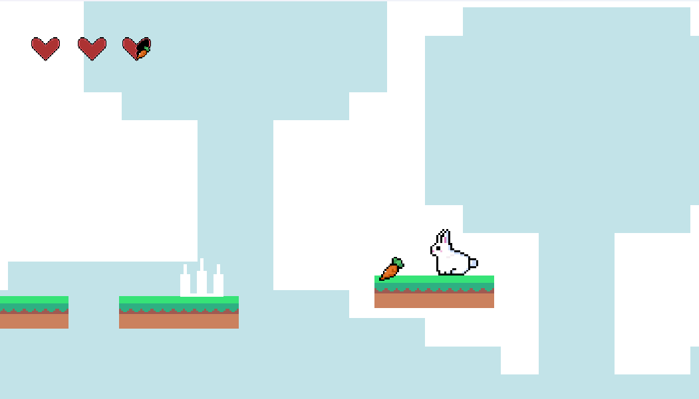

A complete, polished 2D platformer built from the ground up — not just mechanics, but a cohesive world with a bunny protagonist, interactive environments, and its own visual identity.

Wanted to build a complete, polished 2D platformer from the ground up — not just mechanics, but a cohesive world.
Design and develop a bunny-protagonist platformer with interactive environments, collectibles, hazards, dialogue, and level transitions.
Implemented core systems — movement, double-jump, collisions, slopes, moving platforms, damage/death states, and object interactions — and created custom tiles, animations, and UI.
An evolving, playable platformer that demonstrates end-to-end game design, from gameplay systems to visual identity.
- 🎮 Full platformer systems: movement, double-jump, slopes, moving platforms
- 🎨 Custom tiles, animations, and UI for a cohesive visual identity
- 🐰 Bunny protagonist with dialogue, collectibles, hazards & level transitions